SwoodUtils
Overview
SwoodUtils streamlines the ID assignment process for panels and frames, providing a user-friendly interface. It also identifies identical panels, removing the need for the “Combine Panels” macro.
Features
- Easily assign or remove IDs for components like frames and panels through an intuitive interface.
- Detect identical panels and automatically assign a shared ID.
- Customizable ID Settings: Adjust various options within SwoodUtils to suit your workflow preferences.
- Manage Custom Properties: Modify settings like Frame, SubFrame, Hardware, and Exclude to control panel numbering behavior.
Workflow
- Open the assembly containing the panels you want to assign IDs to. Be sure not to use SwoodUtils on a nesting assembly.
- Enable the SwoodUtils Add-in. Go to the Swood Utils Tab and click on Open SwoodUtils
- Click the Refresh Data button to load models into SwoodUtils.
- Once the data is loaded, SwoodUtils will automatically assign TempIDs to each panel based on your settings. These TempIDs act as a preview and are not yet saved to the model.
- Review the assigned TempIDs, then click Save TempIDs to store them as custom properties.
- Finally, save the assembly in SolidWorks.
Main Controls
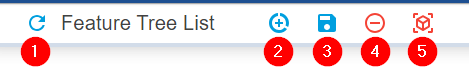
1. Refresh Data
Updates data from SolidWorks, typically used after adding new components to an assembly or switching the active model.
2. Generate TempIDs
Generates Temporary IDs for models, particularly useful after modifying custom properties. This process runs automatically after using Refresh Data.
3. Save TempIDs to Models
Stores the TempIDs as custom properties within the models.
4. Remove IDs from Models
Deletes the ID custom properties from all models.
5. Update View Orientation
Reorients the view of models where the Front view is not normal to the Z-axis. This option is only applicable when using "CombineIdentical" and when the following warning appears on one or more panels.
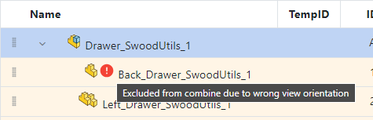
Types of IDs
SwoodUtils supports two ID schemas: Flat and Nested.
Flat IDs
Flat IDs assign sequential IDs to panels.
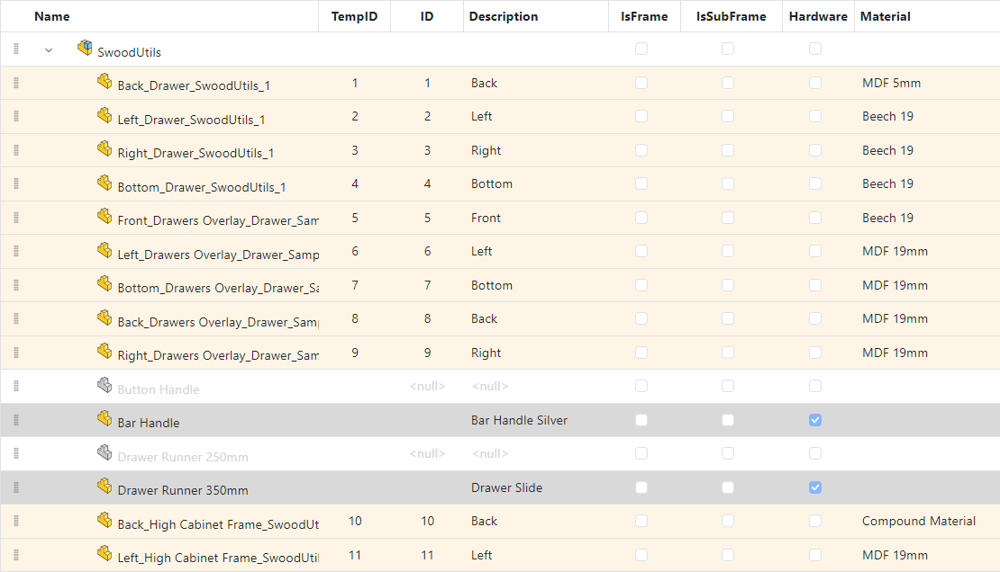
Flat IDs also assign sequential IDs to Frames. To view the table below you must click on the Assemblies tab.
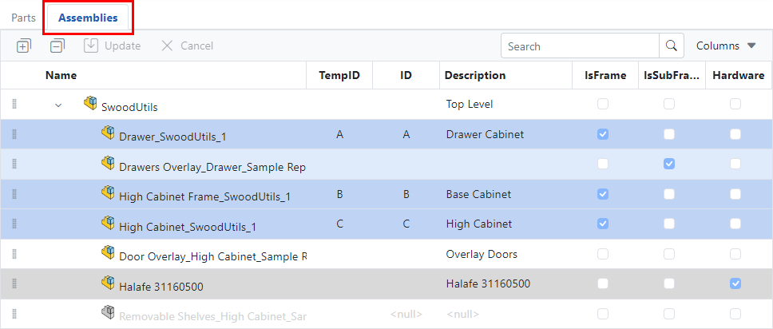
Nested IDs
Nested IDs also assign sequential IDs, but includes a reference to the parent frame.
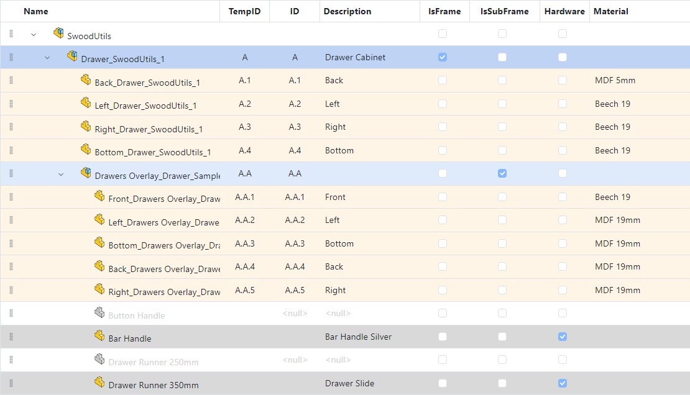
Elements of an ID
IDs are constructed by combining various elements, as listed below.
- ID Separator
- Top-Level Custom Property
- Frame Custom Property
- Frame Prefix
- Frame ID
- Panel Prefix
- Panel ID
A character or set of characters that separates the elements of an ID, typically a dot or dash.
Represents the custom property value of the top-level assembly. This element is optional.
Represents the custom property value of the frame. This element is optional.
A fixed text value. This element is optional.
Number or letter generated by SwoodUtils for each Frame.
A fixed text value. This element is optional.
Number generated by SwoodUtils for each Panel.
Flat ID Format
Panels
Elements Order
«TopLevel Custom Property» «ID Separator» «Panel Prefix» «PanelID»
Example
Top Level . Panel- 1
Top Level . Panel- 2
Top Level . Panel- 3
Example Settings
The following settings have been used in the previous example:
- TopLevel Custom Property = Description
- ID Separator = Dot character (.)
- Panel Prefix = Panel-
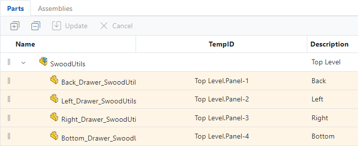
Frames
Elements Order
«TopLevel Custom Property» «ID Separator» «Frame Prefix» «Frame ID»
Example
Top Level . Frame- A
Top Level . Frame- B
Top Level . Frame- C
Example Settings
The following settings have been used in the previous example:
- TopLevel Custom Property = Description
- ID Separator = Dot character (.)
- Frame Prefix = Frame-
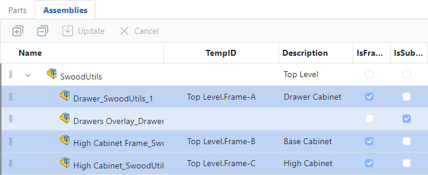
Nested ID Format
Elements Order
«TopLevel Custom Property» «ID Separator» «Frame Custom Property» «ID Separator» «Frame Prefix» «Frame ID» «ID Separator» «Panel Prefix» «PanelID»
Example
Top Level . Drawer Cabinet . Frame- A . Panel- 1
Top Level . Drawer Cabinet . Frame- A . Panel- 2
Top Level . Drawer Cabinet . Frame- A . Panel- 3
Example Settings
The following settings have been used in the previous example:
- TopLevel Custom Property = Description
- ID Separator = Dot character (.)
- Frame Custom Property = Description
- Frame Prefix = Frame-
- Panel Prefix = Panel-
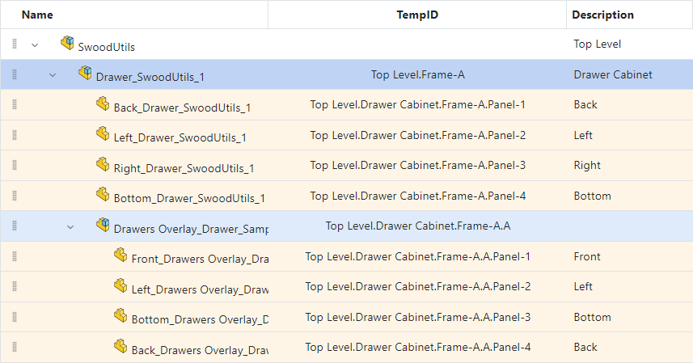
ID Custom Property
Clicking Save TempIDs to Models will save all TempIDs to the models under the custom property ID.
When using Nested IDs, the Frame TempID will also be saved to all panels under the custom property ParentID.
For legacy reasons, TempIDs will additionally be saved to the custom property PanelID for panels, and FrameID for frames. This workflow is now deprecated and should be avoided.
Table Row Colours
Rows are colour coded to easily identify the different types of components. See example below for legend.
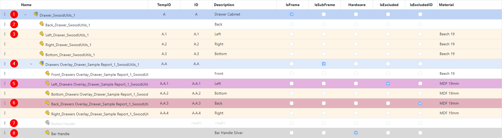
- Frame Component
- Uncategorised Model
- Panel Component
- SubFrame Component
- Model Excluded by Custom Property: Exclude = "Yes". This also applies to the Swood Material Extended Property Exclude
- Model Excluded by Custom Property: ExcludeID = "Yes". This also applies to the Swood Material Extended Property ExcludeID
- Suppressed Component
- Hardware Component
Warning Icons
ID Mismatch
This warning indicates that there is at least one mismatch between the TempID and the assigned ID for the component. See the example below.
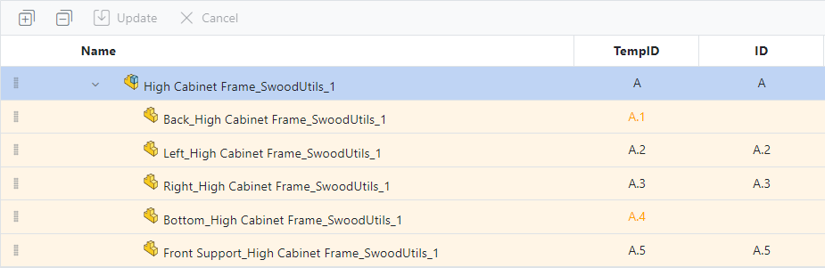
Duplicate IDs
This warning indicates that there is at least one duplicate ID in the components. See the example below.
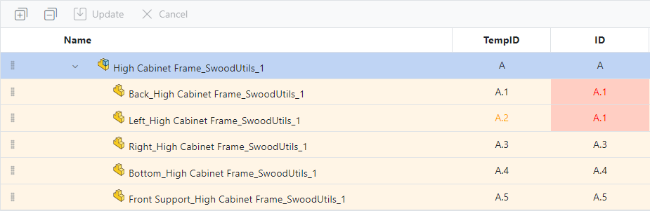
How to Modify Custom Properties
Custom Properties of models can be modified by double clicking on the value of the table, making the change, and then clicking on the Update button. Multiple values can be edited before clicking the Update button.
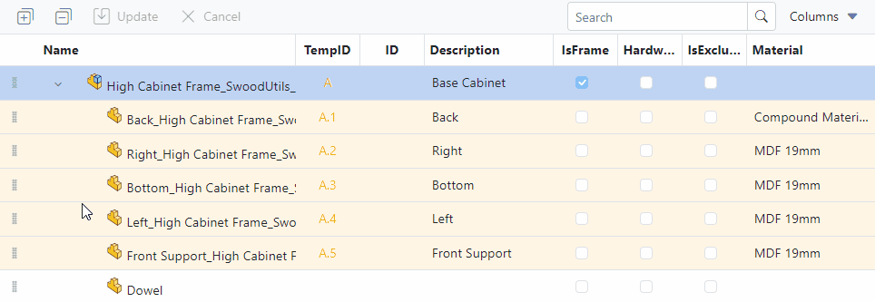
Only the following Custom Properties can be modified:
- ID
- Description
- Frame
- SubFrame
- Hardware
- Excluded
- ExcludedID
App Settings
Automatic Refresh
Automatically refresh the data when the active SolidWorks model has changed.
Prompt message when adding IDs
Prompt confirmation window when adding IDs
Prompt message when deleting IDs
Prompt confirmation window when deleting IDs
Dark Mode
Toggle between light and dark mode.
ID Settings
Nested IDs
Select between Nested or Flat IDs.
Persistent IDs
Retains the current panel ID instead of replacing it. This option is available for Flat IDs only.
Persistent ID Disabled: TempIDs are generated without considering the existing IDs.
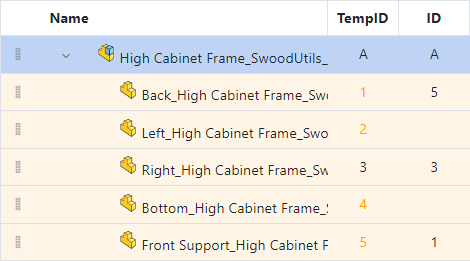
Persistent ID Enabled: Panels with existing IDs retain their original values (1, 3, 5). Panels without IDs are assigned the next available IDs (6, 7).
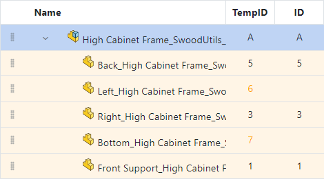
Reuse IDs
Reassigns IDs that have not been used. This option is available for Flat IDs only.
Reuse IDs Disabled: Panels with existing IDs retain their original values (1, 3, 5). Panels without IDs are assigned the next available IDs (6, 7).
Reuse IDs Enabled: Panels with existing IDs retain their original values (1, 3, 5). Panels without IDs are assigned the unused IDs (2, 4).
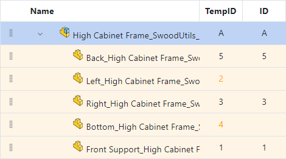
Combine Identical
This feature consolidates identical panels by evaluating their geometry, material, edgebands, laminates, and grain direction, assigning a shared ID to all matching panels.
Additionally, combined panels are marked with a distinct icon for easy identification in the list.
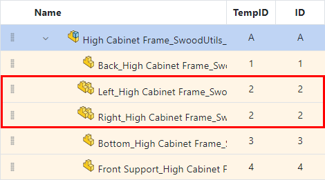
Order Type
Specifies how IDs are ordered:
- None: Random order (fastest method)
- SortSettings: Order IDs based on model custom properties, such as Thickness or Length or Material
- FeatureTreeOrder: Follows the feature tree order (slower method)
The order can also be manually changed by dragging and dropping the rows. See example below.
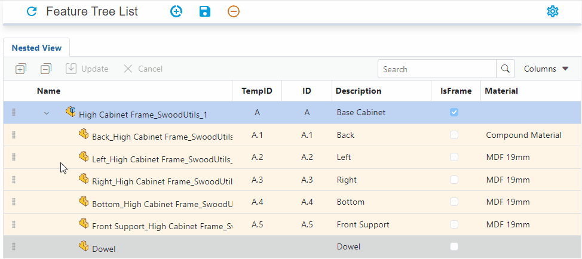
ID Separator
Character(s) used to separate IDs.
Frame Alpha ID
Uses letters for Frame IDs instead of numbers.
Frame Starting ID
Specifies the starting value for Frame IDs.
Frame Increment Value
Value used to increment Frame IDs.
Frame ID Format
Defines the format for numeric Frame IDs.
Frame Fixed Prefix
Fixed prefix added to all Frame IDs.
Frame Sort Order
Specifies the order used to sort the feature tree. Only visible when Order Type = SortSettings
Panel Starting ID
Specifies the starting value for Panel IDs.
Panel Increment Value
Value used to increment Panel IDs.
Panel ID Format
Defines the format for numeric Panel IDs.
Panel Fixed Prefix
Fixed prefix added to all Panel IDs.
Panel Sort Order
Specifies the order used to sort the panel list. Only visible when Order Type = SortSettings
Top-Level Property Prefix
Prefix for top-level properties.
Frame Level Property Prefix
Prefix for frame-level properties.
Copy Settings between Users
Settings are stored locally on each machine, they cannot be placed on a server.
To share settings between users, simply copy the files in C:\ProgramData\Solid Solutions\SwoodUtils and paste them into the same directory on the second user's system.
Licensing
SwoodUtils uses the same licensing scheme as the SwoodEditor, for more information click here
Future Development
Here is a list of ideas/feature that have been considered for future development:
- Integrate SwoodUtils into the SolidWorks Task Pane with a simplified interface, with the option to "Pop Out" into a separate window for full functionality.
- Enable persistent IDs for nested components.
- Ability to copy settings between users through the UI.
- Ability to save settings to a server.
- Provide the capability to generate consecutive IDs globally using a database.
- Add a button to run the Swood Report.